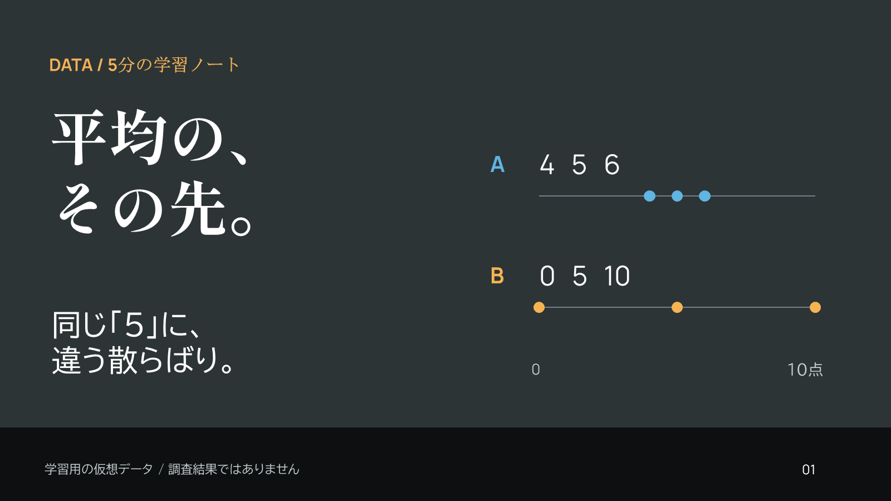
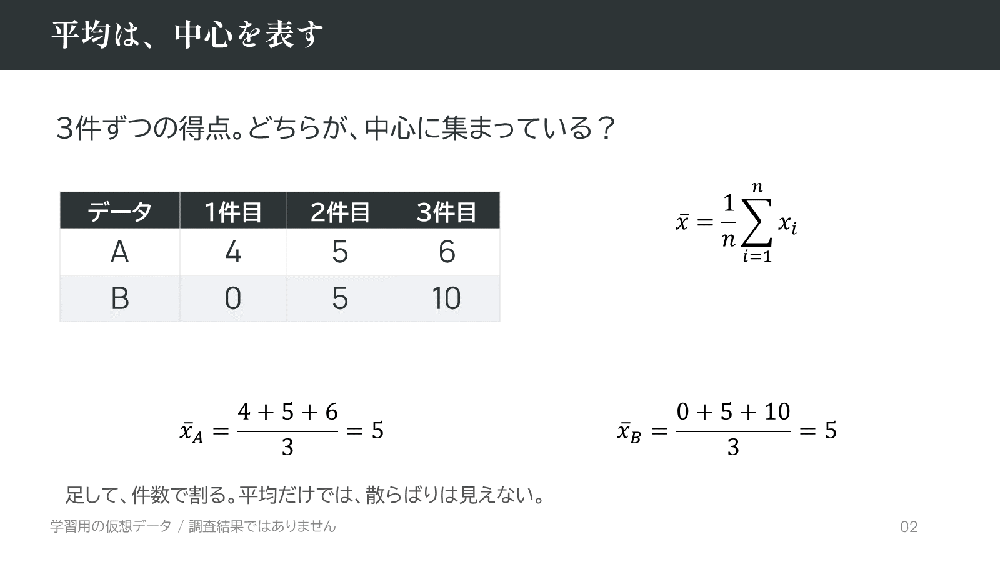
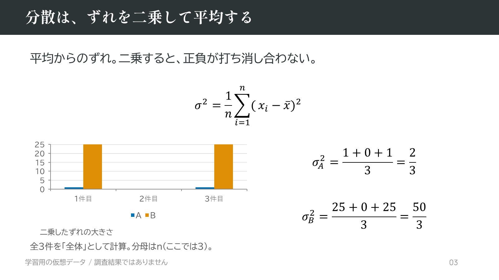
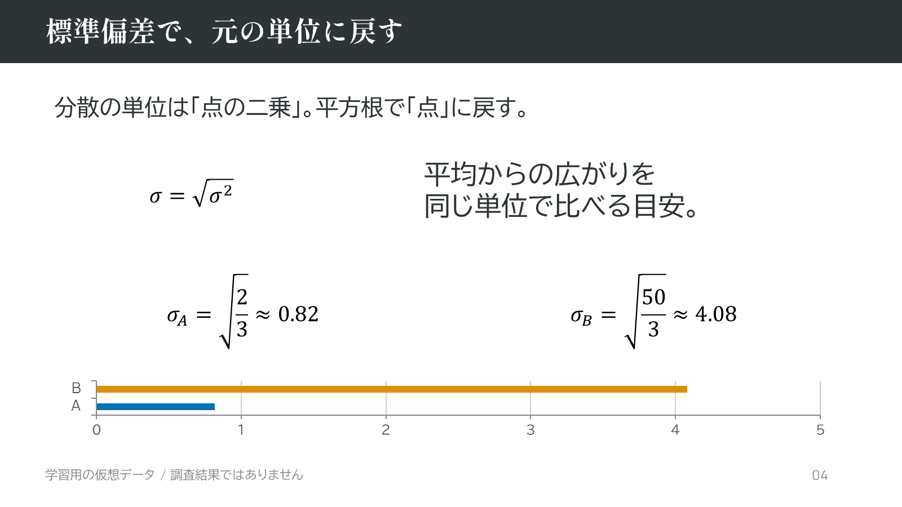
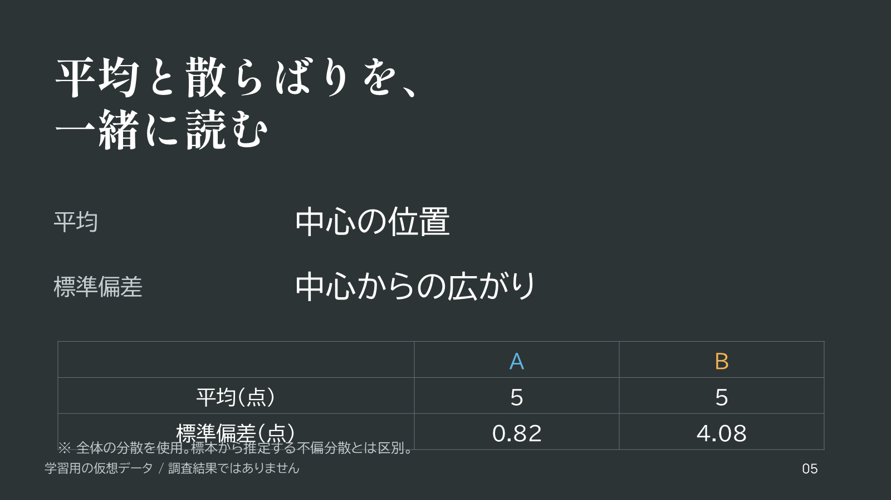

<!doctype html><html lang="ja"><meta charset="utf-8"><meta name="viewport" content="width=device-width"><title>平均の、その先。</title><style>body{margin:0;background:#2d3436;color:#fff;font-family:sans-serif}header,main{max-width:1200px;padding:24px;margin:auto}a{color:#f5b451}figure{margin:0 0 28px}img{display:block;width:100%}figcaption{font-size:13px;padding:10px 0}</style><header><h1>平均の、その先。</h1><p>5分・5枚の学習教材 / 仮想データ / native OMML数式</p><a href="deck.pptx">編集可能なPowerPoint</a> · <a href="render/deck.pdf">PDF</a> · <a href="README.md">日本語ガイド</a> · <a href="../../../downloads/native-math-example-ja.zip">制作ZIP</a></header><main><figure><figcaption>1. 平均の、その先。</figcaption></figure><figure><figcaption>2. 平均は、中心を表す</figcaption></figure><figure><figcaption>3. 分散は、ずれを二乗して平均する</figcaption></figure><figure><figcaption>4. 標準偏差で、元の単位に戻す</figcaption></figure><figure><figcaption>5. 平均と散らばりを、一緒に読む</figcaption></figure></main></html>